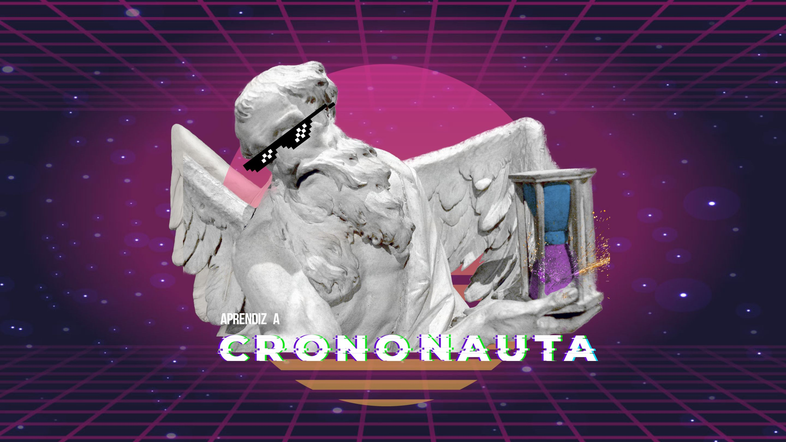
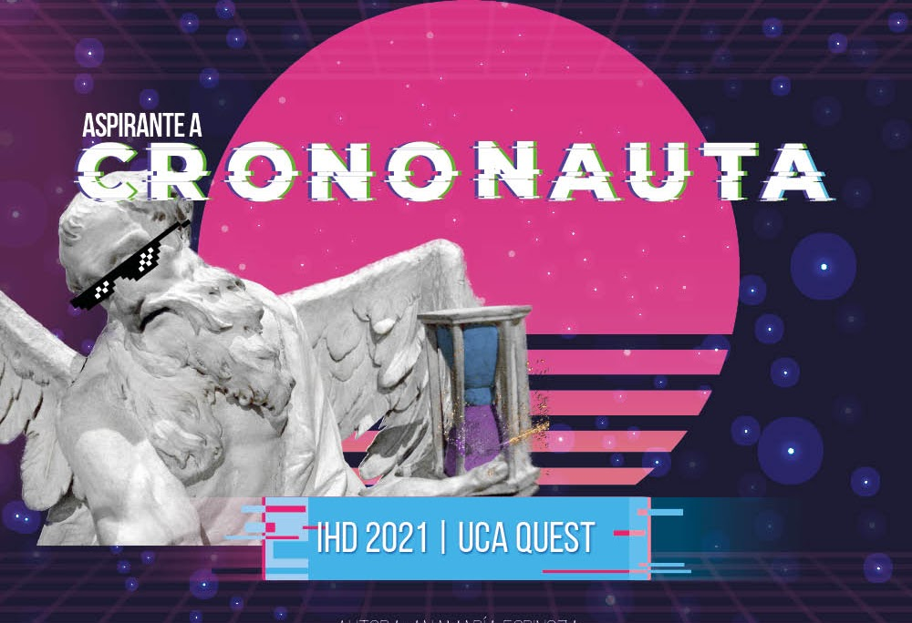
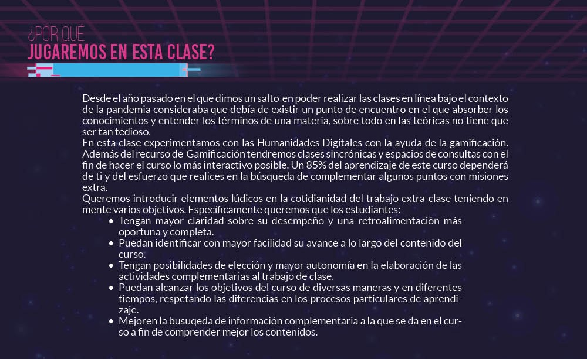
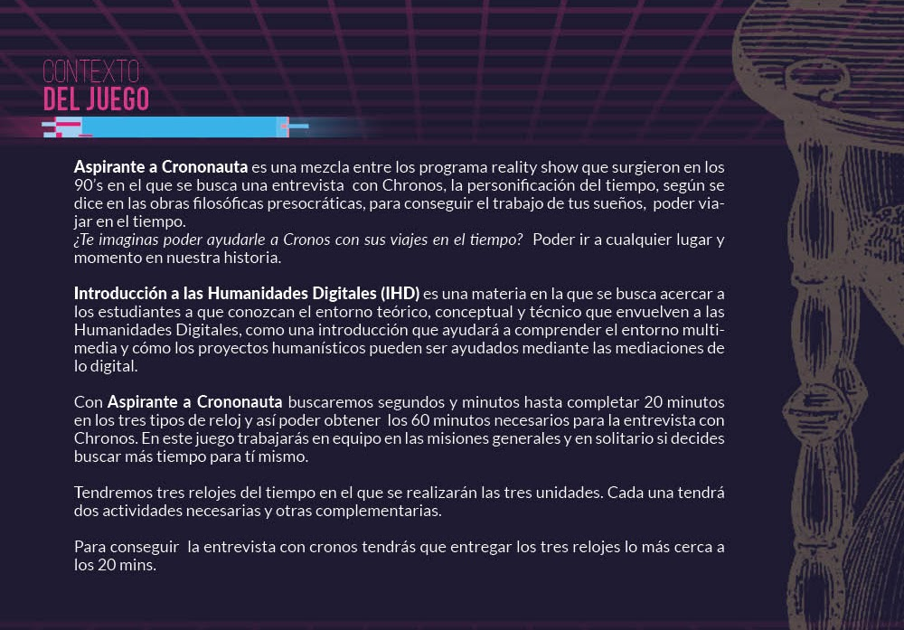
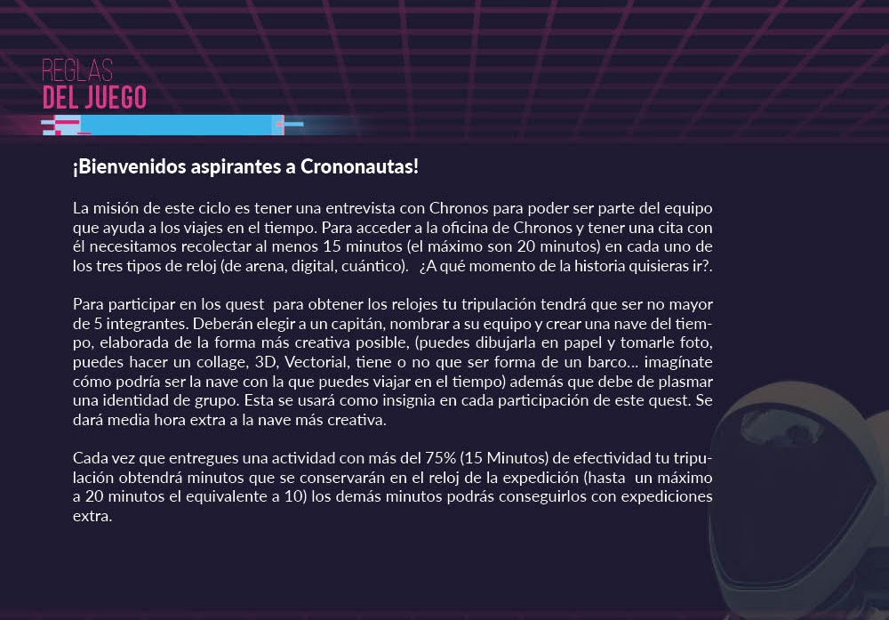
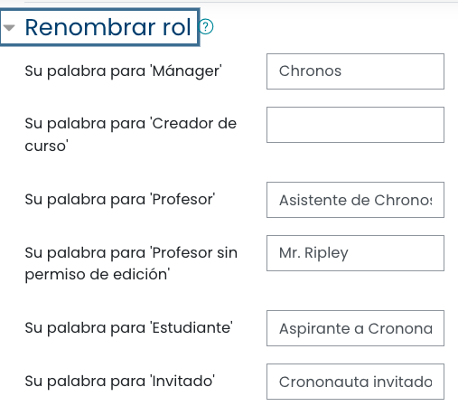
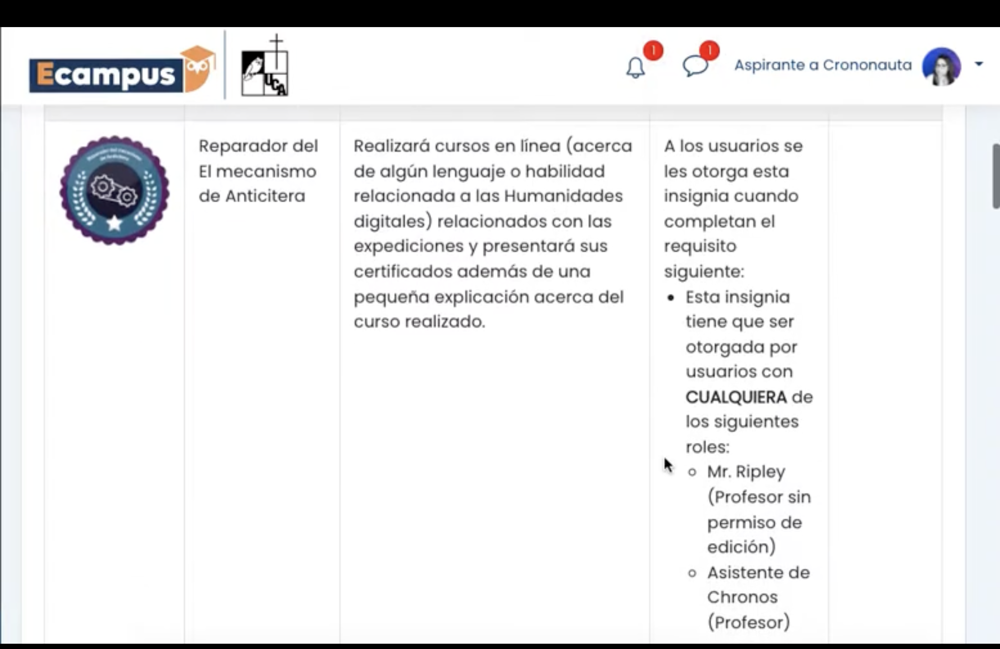

Caso de Estudio
Learning Experience Design
Gamificar en la Universidad
por Anamariae Espinoza

Porque a veces la mejor forma de mostrar lo que hago es dejar que lo sientas.
Diseño experiencias de aprendizaje que cambian cómo las personas piensan y actúan, no solo qué recuerdan. Combino estrategia instruccional, narrativa y diseño visual para hacer que el conocimiento complejo se vuelva accionable, memorable y escalable. Trabajo en la intersección entre educación, comportamiento y tecnología, con enfoque especial en accesibilidad cognitiva e inclusión.
Diseño de experiencias gamificadas y narrativas que no solo transfieren conocimiento, sino que transforman hábitos, decisiones y desempeño. Ideal para programas de capacitación corporativa, compliance y cultura organizacional.
Creación de journeys de aprendizaje end-to-end que combinan pedagogía, UX y storytelling. Desde el diagnóstico de necesidades hasta el prototipo navegable, con métricas de impacto integradas.
Diseño instruccional que reconoce la diversidad cognitiva, neurodivergencia, estilos de aprendizaje y contextos culturales. Experiencias que funcionan para audiencias reales, no para usuarios promedio.
Industrias: Higher Education · Fintech · Public Sector · NGOs · EdTech
"Aspirante a Crononauta"
Una experiencia gamificada que combina narrativa de viajes en el tiempo con evaluación formativa para la materia Introducción a Humanidades Digitales. Integra modalidades sincrónica, asincrónica y presencial con sistema de progresión basado en desafíos temporales.
Gamificar requiere de un proceso de abstracción y toma de decisiones creativas. En esta sección encontrarán la gamificación realizada para la materia de Introducción de Humanidades Digitales. Las clases se realizaron en modalidad Sincrónica, asincrónica y presencial. Todo el proceso creativo tanto gráfico como de la historia fue realizado por mí.
Contexto Institucional
Introducción a Humanidades Digitales es la única materia de su tipo en El Salvador. Fue creada durante la reforma curricular de la Licenciatura en Comunicación Social y la carrera de Técnico en Producción Multimedia en la Universidad Centroamericana (UCA).
Enfoque Pedagógico
Combina tecnología digital con pensamiento crítico. Los estudiantes aprenden de y con la tecnología para crear productos que integren procesos de base de datos, mediación digital y presentación accesible de información.
Temas Clave
El proceso de Gamificación tomado en este caso coincide mucho con lo dicho en la página de Procesos. Debido a al fuerte componente tecnológico de la materia decidí que el tema bajo el que se realizaría la gamificación serían los viajes al tiempo. La materia incluye procesos de:
En las imágenes a continuación encontrarán el manual de uso y cómo se desarrolló el ejercicio.
"La gamificación no es solo hacer un juego. Es crear una estructura diseñada con narrativas que dan contexto y marco teórico para que el aprendizaje sea interesante, estructurado y hasta divertido"
Investigación de objetivos educativos y contexto del usuario
Output:
Mapa de objetivos + criterios de éxito + estructura del curso
Creación de contenidos base y estrategia de evaluación
Output:
Contenidos base + recursos + evaluación preliminar
Diseño de la experiencia jugable y sistemas de progreso
Output:
Storyline + reglas + sistema de progreso + prototipo inicial
Refinamiento visual y experiencia de usuario
Output:
Kit visual + componentes + prototipo refinado
Validación de calidad y preparación para implementación
Output:
Checklist + plantilla reusable + mejoras para iteración

La línea gráfica que realicé fue inspirada en una estética de un videojuego de los ochentas con mezcla de un Chronos postmoderno.
En ésta imagen encontramos la forma como se justifica a los estudiantes cómo se abordará el curso. Y se plantea el reto de un esfuerzo mixto. Los estudiantes como actores principales de su educación y los profesores como parte de un acompañamiento en el que la retroalimentación es de gran importancia.


Premisa Narrativa
Aspirante a Crononauta mezcla el formato de reality show de los años 90 con filosofía presocrática. Los estudiantes compiten por una entrevista con Chronos (la personificación del tiempo) para conseguir el trabajo de sus sueños: viajar en el tiempo.
Estructura de Retos
Toda gamificación necesita tener las reglas claras y las formas como jugar. En esta imagen se le explica a los estudiantes las formas como podrán sumar puntos con el fin de tener una entrevista con Chronos.

Sistema de Equivalencia Temporal
La gamificación mapea contenidos educativos a unidades de tiempo narrativo. Cada minuto de reloj equivale a puntos de progresión, creando una correspondencia clara entre dedicación del estudiante y avance en la narrativa.
100 minutos
=
10 puntos
≤ 20 min
=
Entrevista
3 Retos
=
3 Unidades
Metodología de Diseño
Sistema de Puntuación
La equivalencia temporal vincula esfuerzo directo con progresión:
100 minutos de reloj
=
10 puntos máximo
10 minutos
=
1 punto
Estructura de Misiones
Ruta de Progresión
Los estudiantes progresan a través de 3 actos narrativos, cada uno con su propio sistema de misiones y cronología:
Acto I: Pasado
Historia de Humanidades Digitales
Acto II: Presente
Conceptos y habilidades HD
Acto III: Futuro
Aplicaciones innovadoras de HD
Todos los artefactos, documentos y componentes diseñados durante el proceso de gamificación, listos para implementación y escalabilidad.
Learning Journey completo del estudiante desde inicio hasta conclusión del curso
Narrativa principal, arco de historia y contexto del mundo gamificado
Reglas de juego, sistema de puntos, insignias y mecánicas de progresión
Prototipo interactivo de la experiencia gamificada lista para testear
Guía de estilos, paleta de colores, tipografía, iconografía y componentes reutilizables
Control de calidad, plantilla reusable y recomendaciones para iteración futura
Diseño de Evaluaciones
Los parciales mantienen coherencia narrativa con el juego. Cada evaluación se estructura como una "misión de examen" donde los estudiantes aplican conceptos en contexto temporal (Pasado, Presente, Futuro). Las evaluaciones son simultáneamente formativas y sumativas.
Cada parcial se convierte en una misión narrativa que los estudiantes deben completar para avanzar. Los formatos varían (quiz, proyecto, presentación) manteniendo el marco de juego.
Cada estudiante asume un rol dentro de la gamificación, convirtiéndose en un "Aspirante a Crononauta" con diferentes funciones y responsabilidades dentro del equipo. Los roles definen las dinámicas de trabajo colaborativo.

Función Pedagógica
Las insignias son símbolos de logro que reconocen competencias específicas adquiridas. Funcionan como feedback positivo inmediato y externa la progresión interna del estudiante.
Tipos de insignias: Desafío completado, Evaluación aprobada, Bonus temporal, Participación destacada, Creatividad demostrada
El sistema de insignias incentiva la persistencia y celebra hitos. Cada insignia es visible en el perfil del estudiante dentro del aula virtual, creando un sistema de estatus que refuerza la narrativa.

Contenido del Manual
Documentación completa que asegura implementación consistente. El manual es el artefacto principal que permite replicabilidad y escalabilidad de la experiencia gamificada a otros cursos y contextos educativos.
Experto en gamificación educativa, LXD y educación neurodivergente. Transformo ideas en experiencias de aprendizaje innovadoras.